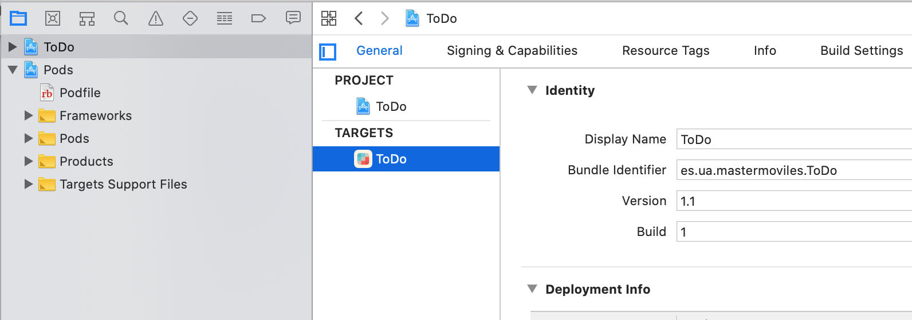

Práctica 1: Firma, aprovisionamiento y
distribución de apps¶
En las prácticas de esta sesión deberás trabajar con distintos aspectos relacionados con la firma, la distribución y el despliegue de apps en dispositivos reales.
Dada la situación de enseñanza no presencial en la que nos encontramos en estos momentos, vamos a intentar guiar la práctica lo máximo posible, indicando paso a paso qué secciones de teoría debes leer y qué actividades debes realizar.
Resumimos a continuación los objetivos generales de esta práctica:
- Firmar una app con tu cuenta gratuita e instalarla en un dispositivo configurado como dispositivo de desarrollo.
- Darte de alta en el equipo de desarrollo de la UA.
- Firmar la app usando un perfil de aprovisionamiento que te permite instalarla en cualquier dispositivo autorizado en el perfil.
- Distribuir esta app firmada con el perfil de aprovisionamiento del equipo de la UA usando Firebase.
1. Firma e instalación de una app en un dispositivo de desarrollo¶
-
Lee los siguientes apartados del tema de teoría:
- Introducción: Resumen de lo que vamos a ver en este tema e introducción breve a la importancia de la seguridad en la plataforma de Apple.
- Cuenta de desarrollador de Apple: Explicación de los distintos tipo de programas de desarrollo en la plataforma Apple y características de cada uno.
- Demo sobre distintos tipos de programas de desarrollo de Apple: Demostración sobre el apartado anterior. No es posible realizarla de forma no presencial, pero se muestran capturas de pantalla que te pueden dar una idea del proceso y guiarte de cara a la realización de la siguiente actividad.
-
Deberás crear un Apple ID y darte de alta como desarrollador. Si ya lo tienes, no hace falta que hagas nada.
Para crear un Apple ID, puedes introducir tus datos en este enlace. Este Apple ID será el que se asociará a la cuenta de desarrollador.
Después deberás darte de alta como desarrollador Apple con el Apple ID recién creado en https://developer.apple.com/register/.
-
Accede a tu portal de desarrollador. Será el portal del programa gratuito. Este programa permite acceder a las herramientas de desarrollo, la documentación y acceso limitado a ciertas capacidades (incluido probar aplicaciones en dispositivos conectados a Xcode).

Explora las distintas opciones que permite la cuenta:
- Documentation
- pDownloads
- Forums
- Bug reporter
- Help
-
Lee los siguientes apartados de teoría:
- Certificados: Explicación del concepto de certificado, su ubicación en Xcode y MacOS y su uso para firmar apps.
- Demostración sobre la firma y ejecución de apps: No es posible realizarla de forma no presencial, pero se muestran capturas de pantalla que te pueden dar una idea del proceso y guiarte de cara a la realización de la siguiente actividad.
-
Descarga la app ToDo. Y sigue los pasos de la demostración anterior para crear el certificado gratuito de desarrollador, cambiar el bundle ID de la app a un identificador tuyo, firmar la app, comprobar el certificado y probar la app en tu dispositivo de desarrollo (si lo tienes).
-
Incluye tu nombre en la pantalla en la que aparece el número de tareas terminadas (a la que se accede pulsando en el botón Done).
-
Captura la pantalla de la app ejecutándose en el dispositivo mostrando la pantalla con tu nombre y guárdala como documentación. Si no tienes dispositivo, hazlo con la ejecución del simulador.
2. Configuración de la cuenta de desarrollador¶
-
Para la inscripción en el equipo de desarrollo de la universidad escribe tu nombre, apellidos, dirección de e-mail en este fichero Google Docs. Escribe también el ID del dispositivo para incorporarlo al portal del equipo de la UA.
-
Una vez que te añadamos al equipo de la UA recibirás en el correo electrónico un mensaje con un código de invitación. Pincha en él e introduce allí tu Apple ID.

- Una vez aceptada la invitación entra en el portal del desarrollador, comprueba que ya estás en el programa de la UA y prueba las distintas opciones disponibles.
3. Firma y despliegue de app con perfil de aprovisionamiento¶
-
Lee los siguientes apartados de teoría:
- Capacidades de las apps: Explicación de cómo configurar las apps para que puedan usar determinados servicios restringidos de Apple.
- Despliegue de apps en dispositivos de prueba: Explicación de cómo el perfil de aprovisionamiento de una app permite a ésta utilizar servicios de Apple y ejecutarse en dispositivos de prueba.
-
Sigue los pasos de la demo y ejercicio de teoría, realizando además lo siguiente:
- Captura la pantalla de Xcode en la que se muestre cómo has firmado tu app con el perfil genérico (la pantalla equivalente a esta).
- Comprueba en el portal del desarrollador de la UA que el
profesor ha creado el App ID y el perfil de aprovisionamiento
Master Moviles ToDo. Captura las pantallas con las páginas del portal del desarrollador de la UA mostrándolos (incluye en las pantallas toda la ventana del navegador, para que aparezca tu usuario en la parte superior derecha). - Captura la pantalla de Xcode en la que se muestre cómo has
firmado tu app con el perfil
Master Moviles ToDo(la pantalla equivalente a esta) - Si tienes algún dispositivo iOS, instala el fichero .ipa
obtenido usando Apple Configurator 2. El UUID del dispositivo
deberá estar incluido en el perfil de aprovisionamiento. Captura
una pantalla de la aplicación
Apple Configurator 2instalando la app en el dispositivo. Comprueba que la app funciona correctamente.
{kind=link}
{kind=link}
4. Distribución con Firebase¶
-
Lee los siguientes apartados de teoría:
- Distribución e instalación de betas online: Explicación de distribución de betas usando TestFlight (servicio de Apple de pago) y Firebase (servicio gratuito de Google).
-
Agrega Firebase a tu proyecto. Deberás instalar
CocoaPodspara instalar en tu proyecto Google Analytics para Firebase. -
Abre el proyecto con Xcode, abriendo el fichero
.xcworkspacerecién creado. Cambia el número de versión a1.1.

- Distribuye la app a
domingo.gallardo@ua.esusando App Distribution. Captura las pantallas de App Distribution y de Google Analytics en las que se muestran que el profesor se ha descargado y ha abierto la app.
Entregas¶
Crea una carpeta y guarda en ella lo siguiente:
- Captura la pantalla de la app ejecutándose en el dispositivo (o en el simulador, si no tienes) mostrando la pantalla con tu nombre (paso 1.7).
- Capturas del paso 3.2.
- Capturas del apartado 4.4.
- Binario .ipa del apartado 3.2
- Carpeta con el proyecto completo.
Comprime la carpeta y entrégala en la actividad de Moodle Entrega 1.